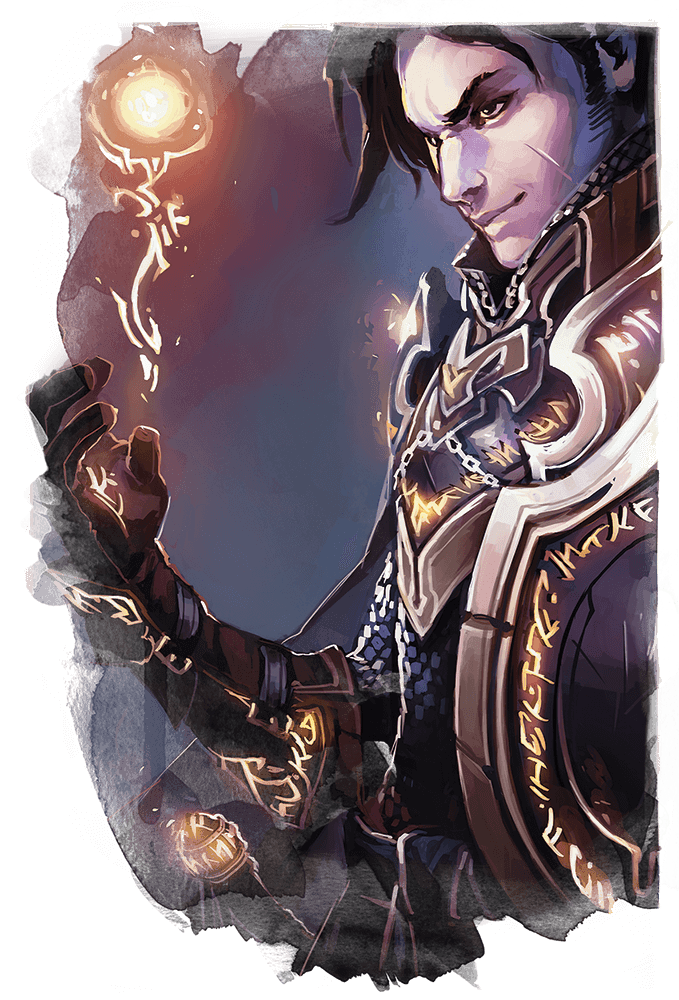

According to Wizards of the Coast, "Clerics combine the helpful magic of healing and inspiring their allies with spells that harm and hinder foes. They can provoke awe and dread, lay curses of plague or poison, and even call down flames from heaven to consume their enemies. For those evildoers who will benefit most from a mace to the head, clerics depend on their combat training to let them wade into melee with the power of the gods on their side."
Clerics also, notably, don't have to follow 'good' gods. For instance, Asmodeus is the Lord of Baator, the Nine Hells, but since he is divine he can have clerics. Or gods of Order. The most important thing to remember is that clerics are always religious, but D&D religion is distinct from real-life religion.
Divine intervention! Clerics have the ability to potentially have their god intervene in times of crisis!
